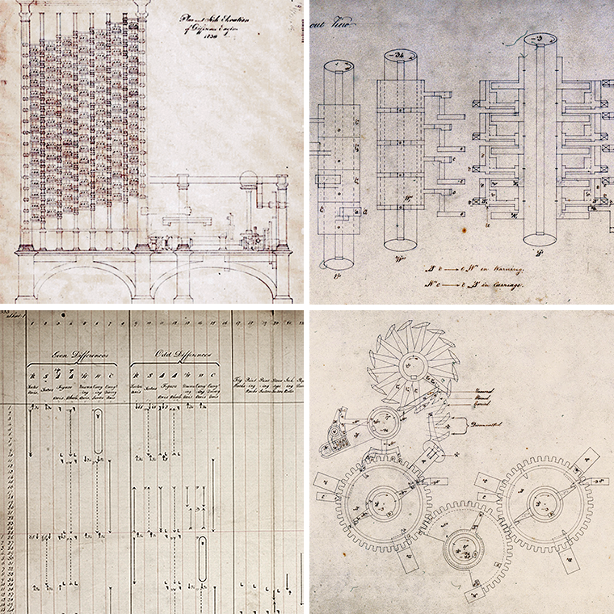
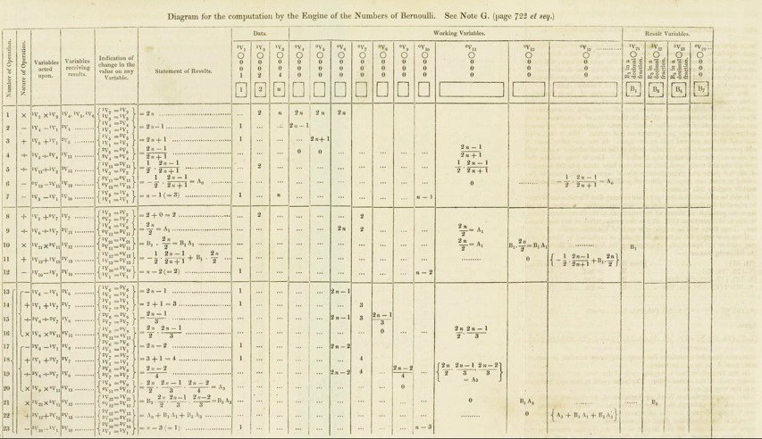
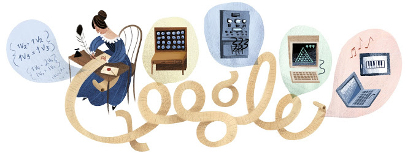

ADA LOVELACE
Accomplishments
Regarded as the world's first computer programmer, Ada Lovelace contributed much to the development of the computer and the establishment of the field of computer science and programming. Her publication of notes commenting on Babbage's Analytical Engine gained popularity and demonstrated her extensive knowledge of calculus and the workings of his invention. Her added notes comprised two-thirds of the complete work that she translated. Her notes explained Babbage’s work and described how the analytical engine would sequentially compute Bernoulli numbers, which, at the time, were computed by hand. Her suggestions within his notes created what most consider the first algorithm as the process to compute Bernoulli numbers required a loop.

Image of Babbage's Analytical Engine The machine demonstrates the first prototypes of the modern-computer developed. This is significant as it indicates the developing field of computer science and the growing interest in developing such machines. Babbage's Analytical Engine exposed Lovelace to the idea of computing and helped to foster her interest in computer science.
Lovelace's understanding of how numbers could be used to represent more than just quantities and a machine could be made that could manipulate all types of data foreshadowed the development of the modern computer. Writing that the analytical engine “might act upon other things besides number, were objects found whose mutual fundamental relations could be expressed by those of the abstract science of operations… Supposing, for instance, that the fundamental relations of pitched sounds in the science of harmony and of musical composition were susceptible of [mathematical] expression and adaptations, the engine might compose elaborate and scientific pieces of music of any degree of complexity or extent," Lovelace was the first to understand and express the potential of converting any data into numbers that could be manipulated by algorithms, Lovelace laid the foundation for the development of the early computer.
The analytical machine “might act upon other things besides number, were objects found whose mutual fundamental relations could be expressed by those of the abstract science of operations… Supposing, for instance, that the fundamental relations of pitched sounds in the science of harmony and of musical composition were susceptible of [mathematical] expression and adaptations, the engine might compose elaborate and scientific pieces of music of any degree of complexity or extent."

Image of Lovelace's notes on the Analytical Engine and the First Algorithm
This image depicts Lovelace's contributions to the field of computer science and the development of the first algorithm as Lovelace sought to develop a way for Babbage's machine to solve Bernoulli's numbers.
1816
Ada Lovelace was born to an affluent family on December 10, 1815. At a young age, Lovelace's parents separatad with her mother raising her with an emphasis on the importance of education. Thus, Lovelace grew up well-educated and learned..
1843
Lovelace published the translation of the account of Charles Babbage's Analytical Engine. Her analysis of his innovation created the first computer algorithm and promoted the development of the modern-day computer with endless possibilities. .
1852
Lovelace passed away at the age of 37 due to uterine cancer. However, her accomplishments remain a considerable influence today in the growth of technology and computing.
1953
Lovelace's notes were rediscovered and published in Faster Than Thought: A Symposium on Digital Computing Machines by B.V. Bowden.
1980
In recognition of her achievements, the U.S. Department of Denfense named a new computer programming language "Ada."

This image of Google's recognition of Lovelace's 197th birthday demonstrates the impact Lovelace had and the significance of her contribution to the field of computer science in developing the first algorithm and the idea of the first modern computer.